Make it your own
Create text, image and audio cards. Use cloze to hide words or Image Occlusion to cover parts of a diagram. Preview before studying; open the editor when you want to make changes.
Flashcards for iPhone & iPad
A little company for your daily reviews. Bring your own flashcards, find words even inside images, and explain what you’re learning to your cat.
Your content. Your pace. No Recolio account required.
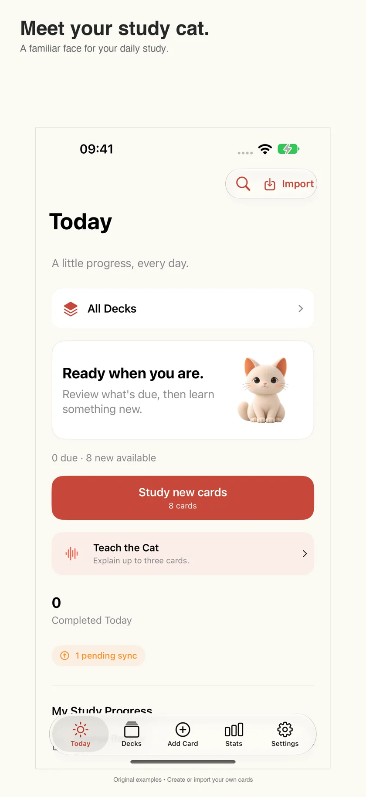
A little cat. A place to think.
Open a card, explain it in your own words, then compare with the original answer. Add anything you missed, reflect on your understanding and save. Your cat responds when saving succeeds; you decide how well you understood it.
Explanations stay on this device. They are excluded from iCloud sync and backups. Teach does not submit a normal review rating or change its schedule.
Read the guide →No. Compare with the original answer and assess your own understanding. The cat’s response marks a successful save, not a correctness judgment. Teach does not count as a normal completed review.
No. Drafts and completed explanations are local-only and excluded from iCloud sync and backups. Deleting their cards removes associated explanations. Restoring a library clears local explanation records to avoid attaching them to the wrong cards. Reimporting does not restore them. Keep a separate copy of important text before deleting data or reinstalling.
Your companion, your choice →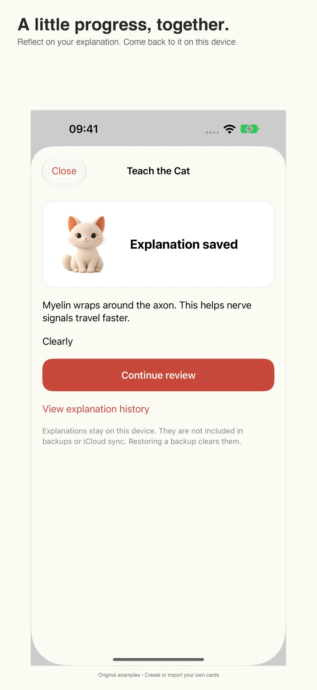
.apkg → Recolio
Real screens. Your kind of studying.
Recolio / iPhone + iPad
Search card text and words recognized in images on either side. Image matches show a thumbnail and highlighted words. Search from Today to open the card and review it right away.
Read the guide →
01 / A familiar place to start
Choose an .apkg file, check the import, and save it to a folder. Preview the rendered cards without changing your study history. Start a review when you’re ready.
Read the guide →
02 / Find the card you remember
Search card text and words recognized in images on either side. Image matches show a thumbnail and highlighted words. Search from Today to open the card and review it right away.
Read the guide →03 / Organization that makes sense
Give folders names that work for you: a semester, an exam, a language. Keep decks together, browse their hierarchy, and choose what to study without renaming the original decks.
Read the guide →
04 / Pick up on your other device
Turn on iCloud sync to keep cards and study progress together across devices using the same Apple Account. Sync is off by default and requires Recolio Pro, iCloud access, and available storage.
Read the guide →

iCloud sync · Recolio Pro
Create text, image and audio cards. Use cloze to hide words or Image Occlusion to cover parts of a diagram. Preview before studying; open the editor when you want to make changes.
Spaced repetition schedules reviews using your answers. Again means you couldn’t recall it; Hard means you recalled it with effort. Good and Easy distinguish comfortable from effortless recall.
Help for the next step
A little company for your daily reviews. Bring your own flashcards, find words even inside images, and explain what you’re learning to your cat.
Read the guide →Troubleshooting and purchase help.
Get help →How local storage, iCloud and permissions work.
Read the policy →Real app screenshots. Original example cards; create or import your own content.
No. Compare with the original answer and assess your own understanding. The cat’s response marks a successful save, not a correctness judgment. Teach does not count as a normal completed review.
Check microphone and speech permissions and whether your device supports on-device recognition for the chosen language. Recolio does not fall back to cloud transcription. You can type directly in the explanation field.
No. Drafts and completed explanations are local-only and excluded from iCloud sync and backups. Deleting their cards removes associated explanations. Restoring a library clears local explanation records to avoid attaching them to the wrong cards. Reimporting does not restore them. Keep a separate copy of important text before deleting data or reinstalling.
Tap Import on Today or Decks, follow the guide, and choose a file from Files. Review the package before importing. Some custom templates or desktop add-ons may need adjustments.
On-device recognition and indexing can take time for new or large decks. Try clear, larger printed words and check both sides of the card. Image search finds recognized words, not objects or similar-looking pictures. UI language and card content language are independent.
Sync is off by default and requires Pro. Enable it in Settings on each device; use the same Apple Account, allow iCloud access, check storage and connect to the network. Let the first sync finish before making major changes. Do not reinstall before protecting local data.
Choose Restore Purchases in Recolio Pro while using the Apple Account that made the purchase. Annual access requires an active subscription. Manage or cancel annual renewal in Apple Settings → your name → Subscriptions. Deleting the app does not cancel it. Apple handles billing and refund decisions.
Your content. Your pace. No Recolio account required.
Get Recolio适用于 iPhone 和 iPad 的学习卡片
让每天的复习多一点陪伴。导入自己的卡片，搜索图片中的文字，也把学到的内容讲给猫咪听。
自己的内容，自己的节奏，无需注册 Recolio 账户。
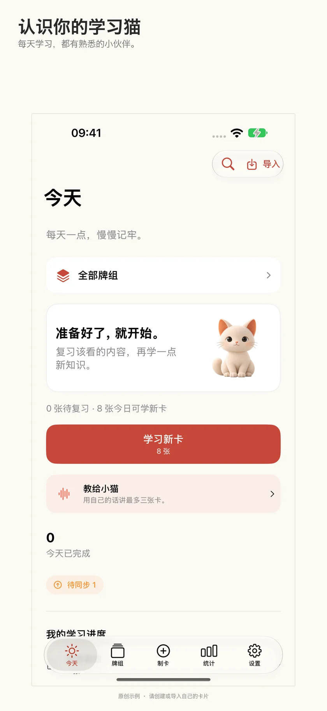
一只猫咪，陪你理清思路。
打开卡片，用自己的话解释，再对照原卡答案。补上遗漏，自评理解程度并保存。猫咪在保存成功后回应；内容是否讲清楚，由你自己判断。
讲解仅保存在本机，不参与 iCloud 同步，也不包含在备份中。讲解不会提交正常复习评分或改变复习计划。
阅读手册 →不能。请对照原卡答案，自行判断理解程度。猫咪回应代表记录保存成功，并非正确性判断。讲解不计入正常复习完成数。
不会。草稿和已完成的讲解仅保存在本机，不参与 iCloud 同步或备份。删除相关卡片会删除其讲解；恢复卡库时会清除本机讲解记录，以免错绑。重新导入不会找回这些记录。删除数据或重新安装前，请另行保留重要文字。
陪伴方式，由你决定 →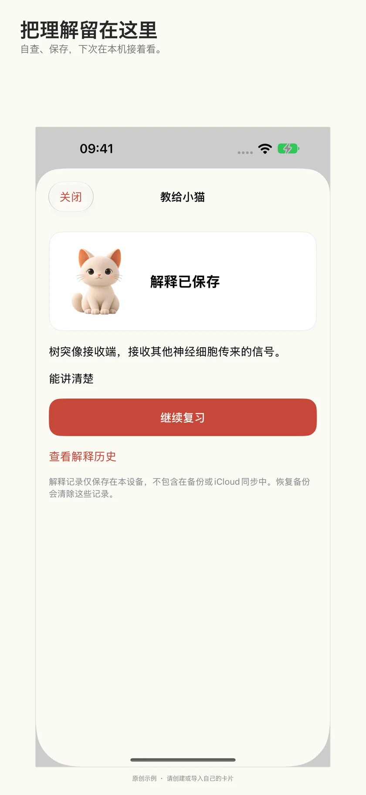
.apkg → Recolio
真实界面，看看哪种方式适合你。
04 / 换台设备，继续学习
开启 iCloud 同步后，在登录同一 Apple 账户的设备之间同步卡片和学习进度。同步默认关闭，需要 Recolio Pro、iCloud 权限和可用存储空间。
阅读手册 →iCloud 同步 · Recolio Pro
加入文字、图片和音频；用 Cloze 挖空文字，或用图片遮挡隐藏图解的一部分。先预览再学习，需要修改时才打开编辑器。
间隔重复根据回答安排下一次复习。Again 表示未能回忆；Hard 表示成功但费力；Good 和 Easy 区分正常回忆与轻松回忆。
下一步，需要时有帮助
真实 App 截图，展示原创示例卡片；学习内容由你创建或导入。
不能。请对照原卡答案，自行判断理解程度。猫咪回应代表记录保存成功，并非正确性判断。讲解不计入正常复习完成数。
请检查麦克风、语音识别权限，以及设备是否支持所选语言的端侧识别。Recolio 不会转用云端转写；你可以直接在讲解框中打字。
不会。草稿和已完成的讲解仅保存在本机，不参与 iCloud 同步或备份。删除相关卡片会删除其讲解；恢复卡库时会清除本机讲解记录，以免错绑。重新导入不会找回这些记录。删除数据或重新安装前，请另行保留重要文字。
点击 Today 或 Decks 的导入按钮，查看引导后从“文件”选择牌组，确认信息再导入。部分自定义模板或桌面插件可能需要调整。
新导入或大型牌组的设备端识别和索引需要时间。尝试清晰、较大的印刷文字，并检查正反面。图片搜索查找识别到的文字，不是识别物体或查找相似图片。界面语言与卡片内容语言相互独立。
同步默认关闭且需要 Pro。在各设备设置中开启，使用同一 Apple 账户并授予 iCloud 权限，检查空间和网络。首次同步完成后再大量修改。未保护本地数据前，不要直接重装。
使用购买时的 Apple 账户，在 Recolio Pro 选择恢复购买。年度权益需要订阅有效。在 Apple 设置→你的姓名→订阅中管理或取消自动续订。删除 App 不会取消订阅。账单及退款由 Apple 处理。
自己的内容，自己的节奏，无需注册 Recolio 账户。
获取 RecolioiPhone・iPad の学習カード
毎日の復習に、小さな相棒を。自分のカードを取り込み、画像の中の文字で探して、学んだことを猫に説明してみましょう。
自分の教材を、自分のペースで。Recolio アカウントの登録は不要です。
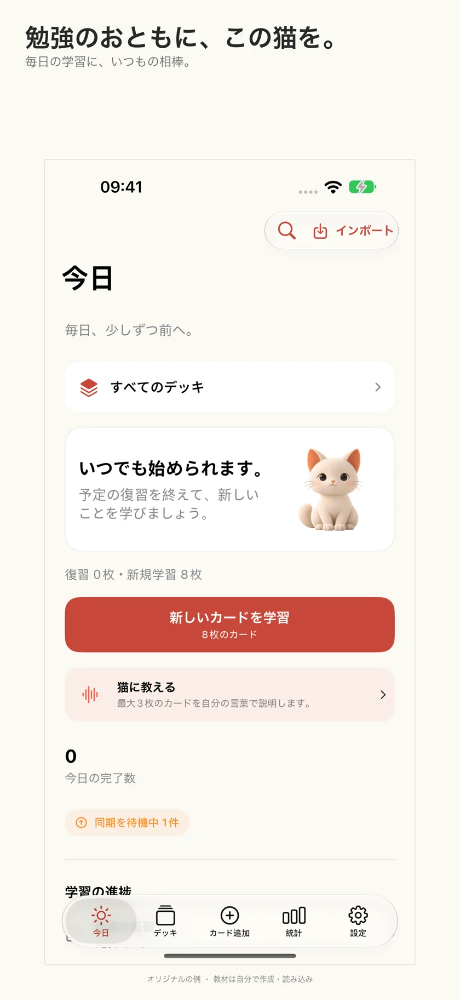
猫と一緒に、考えを整理。
カードを開き、自分の言葉で説明してから元の答えと見比べます。足りない点を補い、理解度を振り返って保存。保存が完了すると猫が反応します。内容を理解できたかは、自分で判断します。
説明はこの端末だけに保存され、iCloud 同期やバックアップには含まれません。通常の復習評価や復習予定は変更しません。
使い方を読む →いいえ。元の答えと比べ、自分で理解度を振り返ります。猫の反応は保存完了を示し、正誤判定ではありません。説明は通常の復習完了数に加算されません。
できません。下書きと保存済みの説明は端末内のみで、iCloud 同期やバックアップの対象外です。対応するカードを削除すると説明も削除されます。カード庫の復元時は誤ったカードへの紐付けを防ぐため端末内の説明を消去します。再取り込みでも戻りません。削除・再インストール前に大切な文章を別途控えてください。
相棒との過ごし方も、自分で →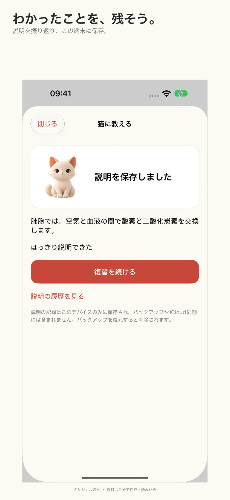
.apkg → Recolio
実際の画面で、自分に合う学び方を。
Recolio / iPhone + iPad
カード本文に加え、表面・裏面の画像から認識した文字も検索。画像の検索結果にはサムネイルと一致した言葉が表示されます。Today からなら、そのままカードを復習できます。
使い方を読む →01 / すぐに始められる
.apkg ファイルを選び、内容を確認してフォルダに保存。カードの表示をプレビューしても、復習履歴は変わりません。準備ができたら学習を始めましょう。
使い方を読む →02 / 覚えている言葉から探す
カード本文に加え、表面・裏面の画像から認識した文字も検索。画像の検索結果にはサムネイルと一致した言葉が表示されます。Today からなら、そのままカードを復習できます。
使い方を読む →03 / 自分に合う整理方法
学期、試験、言語など、好きな名前でフォルダを作成。関連するデッキをまとめ、階層をたどって学習範囲を選べます。元のデッキ名は変わりません。
使い方を読む →04 / 別のデバイスでも続きから
iCloud 同期を有効にすると、同じ Apple Account のデバイス間でカードと学習状況を同期できます。初期設定ではオフです。Recolio Pro、iCloud へのアクセス許可、空き容量が必要です。
使い方を読む →iCloud 同期 · Recolio Pro
文字、画像、音声をカードに。穴埋め（Cloze）や画像の一部を隠す機能も使えます。学習前にプレビューし、直したいときだけ編集画面へ。
間隔反復が回答に応じて次の復習を予定します。Again は思い出せなかった場合、Hard は苦労して思い出せた場合。Good と Easy で通常の想起と楽な想起を区別します。
次の一歩をサポート
毎日の復習に、小さな相棒を。自分のカードを取り込み、画像の中の文字で探して、学んだことを猫に説明してみましょう。
使い方を読む →トラブル解決と購入のサポート。
ヘルプを見る →ローカル保存、iCloud、アクセス権について。
ポリシーを読む →実際のアプリ画面とオリジナルの例です。教材は自分で作成・読み込みできます。
いいえ。元の答えと比べ、自分で理解度を振り返ります。猫の反応は保存完了を示し、正誤判定ではありません。説明は通常の復習完了数に加算されません。
マイクと音声認識の許可、選んだ言語の端末内認識への対応を確認してください。クラウドでの文字起こしには切り替えません。説明欄に直接入力することもできます。
できません。下書きと保存済みの説明は端末内のみで、iCloud 同期やバックアップの対象外です。対応するカードを削除すると説明も削除されます。カード庫の復元時は誤ったカードへの紐付けを防ぐため端末内の説明を消去します。再取り込みでも戻りません。削除・再インストール前に大切な文章を別途控えてください。
Today または Decks の読み込みボタンから案内を開き、「ファイル」でデッキを選びます。内容を確認してから読み込んでください。一部の独自テンプレートやデスクトップ用拡張機能は調整が必要な場合があります。
新規・大規模デッキの文字認識と索引作成には時間がかかることがあります。鮮明で大きめの印刷文字を試し、表裏の両方を確認してください。画像検索は認識した文字を探す機能で、物体や似た画像を探す機能ではありません。画面の言語と教材の言語は別です。
同期は初期設定でオフで、Pro が必要です。各端末の設定で有効にし、同じ Apple Account、iCloud の許可、空き容量、通信を確認してください。初回同期が終わるまで大きな変更は控えてください。ローカルデータを保護する前に再インストールしないでください。
購入時の Apple Account を使い、Recolio Pro の購入の復元を選びます。年間プランは有効な契約が必要です。Apple の設定→自分の名前→サブスクリプションで更新を管理・解約できます。アプリを削除しても解約されません。請求と返金は Apple が扱います。
自分の教材を、自分のペースで。Recolio アカウントの登録は不要です。
Recolio を入手iPhone과 iPad를 위한 학습 카드
매일의 복습에 작은 친구를 더하세요. 내 카드를 가져오고, 이미지 속 글자로 검색하고, 배운 내용을 고양이에게 설명해 보세요.
내 학습 자료를 내 속도로. Recolio 계정 가입은 필요 없어요.
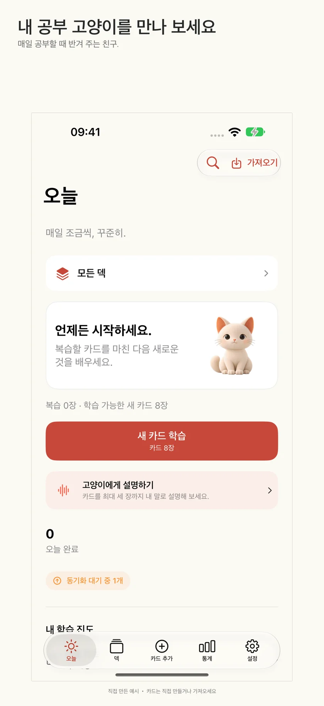
고양이와 함께 생각을 정리해요.
카드를 열어 내 말로 설명한 뒤 원래 정답과 비교하세요. 빠뜨린 내용을 보충하고 이해도를 돌아본 다음 저장하세요. 저장이 완료되면 고양이가 반응해요. 이해했는지는 내가 직접 판단해요.
설명은 이 기기에만 저장되며 iCloud 동기화와 백업에 포함되지 않아요. 일반 복습 평가를 제출하거나 복습 일정을 바꾸지 않아요.
가이드 읽기 →아니요. 원래 정답과 비교하며 이해도를 직접 평가해요. 고양이의 반응은 저장 완료를 뜻하며 정답 판정이 아니에요. 설명은 일반 복습 완료 수에 포함되지 않아요.
아니요. 초안과 완료된 설명은 기기에만 저장되며 iCloud 동기화와 백업에서 제외돼요. 연결된 카드를 삭제하면 설명도 삭제돼요. 카드 라이브러리를 복원하면 잘못된 연결을 막기 위해 기기의 설명 기록이 지워져요. 다시 가져와도 되살아나지 않아요. 삭제하거나 앱을 다시 설치하기 전에 중요한 글을 따로 보관하세요.
함께하는 방식도 내 선택으로 →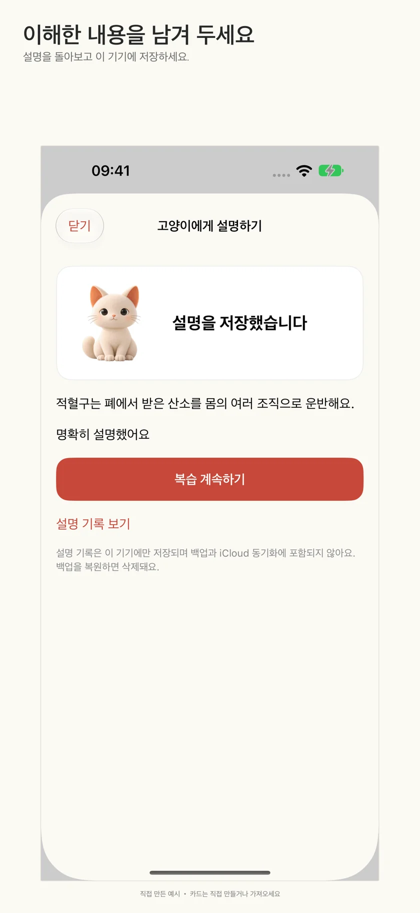
.apkg → Recolio
실제 화면에서 나에게 맞는 학습 방식을 찾아보세요.
Recolio / iPhone + iPad
카드 본문뿐 아니라 앞면과 뒷면 이미지에서 인식한 글자도 검색해요. 이미지 검색 결과에는 미리 보기 이미지와 강조된 검색어가 표시돼요. Today에서 찾은 카드는 바로 복습할 수 있어요.
가이드 읽기 →01 / 간편한 시작
.apkg 파일을 선택해 내용을 확인하고 폴더에 저장하세요. 미리 보기로 실제 카드 화면을 확인해도 복습 기록은 바뀌지 않아요. 준비되면 학습을 시작하세요.
가이드 읽기 →02 / 기억나는 단어로 찾기
카드 본문뿐 아니라 앞면과 뒷면 이미지에서 인식한 글자도 검색해요. 이미지 검색 결과에는 미리 보기 이미지와 강조된 검색어가 표시돼요. Today에서 찾은 카드는 바로 복습할 수 있어요.
가이드 읽기 →03 / 내 방식대로 정리
학기, 시험, 언어처럼 알아보기 쉬운 이름으로 폴더를 만드세요. 관련 덱을 모으고 계층을 펼쳐 학습 범위를 고를 수 있어요. 가져온 덱의 원래 이름은 유지돼요.
가이드 읽기 →04 / 다른 기기에서도 이어서
iCloud 동기화를 켜면 같은 Apple 계정의 기기 간에 카드와 학습 진행 상황을 동기화할 수 있어요. 기본값은 꺼짐이며, Recolio Pro와 iCloud 접근 권한, 충분한 저장 공간이 필요해요.
가이드 읽기 →iCloud 동기화 · Recolio Pro
텍스트, 이미지, 오디오를 더하세요. Cloze로 단어를 빈칸 처리하거나 이미지 가리기로 도표의 일부를 숨길 수 있어요. 학습 전에 미리 보고, 수정할 때만 편집기를 여세요.
간격 반복은 답변에 따라 다음 복습을 예약해요. Again은 떠올리지 못한 경우, Hard는 힘들게 떠올린 경우예요. Good과 Easy는 보통으로 떠올린 경우와 쉽게 떠올린 경우를 구분해요.
다음 단계도 도와드려요
매일의 복습에 작은 친구를 더하세요. 내 카드를 가져오고, 이미지 속 글자로 검색하고, 배운 내용을 고양이에게 설명해 보세요.
가이드 읽기 →문제 해결과 구매 도움말.
도움말 보기 →로컬 저장, iCloud, 권한 안내.
정책 읽기 →실제 앱 화면과 직접 만든 예시 카드예요. 학습 자료는 직접 만들거나 가져오세요.
아니요. 원래 정답과 비교하며 이해도를 직접 평가해요. 고양이의 반응은 저장 완료를 뜻하며 정답 판정이 아니에요. 설명은 일반 복습 완료 수에 포함되지 않아요.
마이크·음성 인식 권한과 선택한 언어의 기기 내 인식 지원 여부를 확인하세요. 클라우드 전사로 전환하지 않아요. 설명란에 직접 입력할 수 있어요.
아니요. 초안과 완료된 설명은 기기에만 저장되며 iCloud 동기화와 백업에서 제외돼요. 연결된 카드를 삭제하면 설명도 삭제돼요. 카드 라이브러리를 복원하면 잘못된 연결을 막기 위해 기기의 설명 기록이 지워져요. 다시 가져와도 되살아나지 않아요. 삭제하거나 앱을 다시 설치하기 전에 중요한 글을 따로 보관하세요.
Today 또는 Decks의 가져오기 버튼에서 안내를 확인하고 파일 앱에서 덱을 선택하세요. 내용을 확인한 뒤 가져오세요. 일부 사용자 템플릿이나 데스크톱 추가 기능은 조정이 필요할 수 있어요.
새 덱이나 큰 덱은 기기 내 인식과 색인에 시간이 걸릴 수 있어요. 크고 선명한 인쇄 글자로 시도하고 카드 양면을 확인하세요. 이미지 검색은 인식된 글자를 찾으며 물체나 비슷한 사진을 찾지는 않아요. UI 언어와 카드 내용 언어는 별개예요.
동기화는 기본적으로 꺼져 있고 Pro가 필요해요. 각 기기 설정에서 켜고 같은 Apple 계정, iCloud 권한, 저장 공간, 네트워크를 확인하세요. 처음 동기화를 마친 뒤 큰 변경을 하세요. 로컬 데이터를 보호하기 전에 앱을 다시 설치하지 마세요.
구매한 Apple 계정으로 Recolio Pro에서 구입 항목 복원을 선택하세요. 연간 이용 권한에는 유효한 구독이 필요해요. Apple 설정→이름→구독에서 자동 갱신을 관리하거나 취소하세요. 앱을 삭제해도 구독은 취소되지 않아요. 결제와 환불은 Apple이 처리해요.
내 학습 자료를 내 속도로. Recolio 계정 가입은 필요 없어요.
Recolio 다운로드Tarjetas de estudio para iPhone y iPad
Un poco de compañía para tus repasos. Importa tus tarjetas, busca palabras incluso dentro de las imágenes y explícale a tu gato lo que estás aprendiendo.
Tu material, a tu ritmo. Sin crear una cuenta de Recolio.
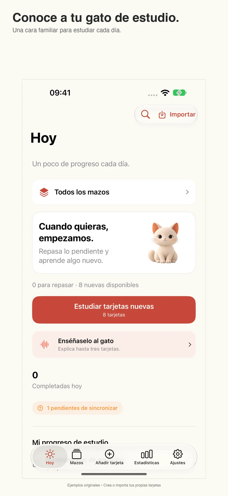
Un gato con quien ordenar tus ideas.
Abre una tarjeta, explícala con tus palabras y compárala con la respuesta original. Añade lo que faltaba, valora tu comprensión y guarda. Tu gato reacciona cuando se guarda; tú decides cuánto has entendido.
Las explicaciones solo se guardan en este dispositivo. No se incluyen en iCloud ni en las copias de seguridad. Enseñar no envía una valoración de repaso ni modifica su programación.
Leer la guía →No. Compara con la respuesta original y valora tu comprensión. La reacción del gato indica que se ha guardado, no que la respuesta sea correcta. Enseñar no cuenta como un repaso normal completado.
No. Los borradores y las explicaciones completadas son locales y quedan fuera de iCloud y las copias de seguridad. Al borrar una tarjeta se eliminan sus explicaciones. Restaurar la biblioteca borra los registros locales de explicación para evitar asociaciones incorrectas. Volver a importar no los recupera. Conserva aparte el texto importante antes de borrar datos o reinstalar.
Tú eliges la compañía →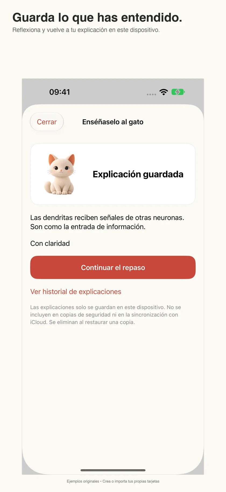
.apkg → Recolio
Pantallas reales para descubrir tu forma de estudiar.
Recolio / iPhone + iPad
Busca en el texto de las tarjetas y en las palabras reconocidas en las imágenes de ambos lados. Las coincidencias incluyen una miniatura y palabras resaltadas. Desde Today, abre el resultado y repasa al momento.
Leer la guía →01 / Un comienzo sencillo
Elige un archivo .apkg, comprueba la importación y guárdalo en una carpeta. Explora las tarjetas sin cambiar tu historial de repaso. Empieza a estudiar cuando quieras.
Leer la guía →02 / Encuentra la tarjeta que recuerdas
Busca en el texto de las tarjetas y en las palabras reconocidas en las imágenes de ambos lados. Las coincidencias incluyen una miniatura y palabras resaltadas. Desde Today, abre el resultado y repasa al momento.
Leer la guía →03 / Organización a tu manera
Nombra tus carpetas por semestre, examen o idioma. Agrupa mazos, recorre sus niveles y elige qué estudiar sin cambiar los nombres originales de los mazos importados.
Leer la guía →04 / Continúa en otro dispositivo
Activa la sincronización con iCloud para mantener tus tarjetas y progreso entre dispositivos con la misma cuenta de Apple. Está desactivada por defecto y requiere Recolio Pro, acceso a iCloud y espacio disponible.
Leer la guía →Sincronización iCloud · Recolio Pro
Añade texto, imágenes y audio. Oculta palabras con Cloze o partes de un diagrama con la ocultación de imágenes. Explora antes de estudiar y abre el editor solo cuando quieras cambiar algo.
La repetición espaciada programa repasos según tus respuestas. Again indica que no recordaste; Hard, que recordaste con esfuerzo. Good y Easy distinguen recordar con normalidad de hacerlo con facilidad.
Ayuda para el siguiente paso
Un poco de compañía para tus repasos. Importa tus tarjetas, busca palabras incluso dentro de las imágenes y explícale a tu gato lo que estás aprendiendo.
Leer la guía →Solución de problemas y ayuda con compras.
Obtener ayuda →Almacenamiento local, iCloud y permisos.
Leer la política →Capturas reales con tarjetas de ejemplo originales. Crea o importa tu propio material.
No. Compara con la respuesta original y valora tu comprensión. La reacción del gato indica que se ha guardado, no que la respuesta sea correcta. Enseñar no cuenta como un repaso normal completado.
Comprueba los permisos de micrófono y reconocimiento de voz, y si el dispositivo admite reconocimiento local en el idioma elegido. Recolio no pasa a transcripción en la nube. Puedes escribir directamente en el campo de explicación.
No. Los borradores y las explicaciones completadas son locales y quedan fuera de iCloud y las copias de seguridad. Al borrar una tarjeta se eliminan sus explicaciones. Restaurar la biblioteca borra los registros locales de explicación para evitar asociaciones incorrectas. Volver a importar no los recupera. Conserva aparte el texto importante antes de borrar datos o reinstalar.
Pulsa Importar en Today o Decks, consulta la guía y elige un archivo en Archivos. Revisa el paquete antes de importar. Algunas plantillas personalizadas o complementos de escritorio pueden necesitar ajustes.
Los mazos nuevos o grandes pueden tardar en reconocerse e indexarse en el dispositivo. Prueba con texto impreso grande y claro; comprueba ambos lados. La búsqueda encuentra palabras reconocidas, no objetos ni imágenes parecidas. El idioma de la interfaz y el del contenido son independientes.
Está desactivado por defecto y requiere Pro. Actívalo en cada dispositivo, usa la misma cuenta de Apple, permite el acceso y comprueba espacio y conexión. Deja terminar la primera sincronización antes de hacer grandes cambios. No reinstales sin proteger los datos locales.
En Recolio Pro, elige restaurar compras con la cuenta de Apple que hizo la compra. El acceso anual requiere una suscripción vigente. Gestiona o cancela la renovación en Ajustes de Apple → tu nombre → Suscripciones. Borrar la app no la cancela. Apple gestiona cobros y reembolsos.
Tu material, a tu ritmo. Sin crear una cuenta de Recolio.
Descargar Recolio適用於 iPhone 與 iPad 的學習卡片
讓每天的複習多一點陪伴。匯入自己的卡片，搜尋圖片裡的文字，也把學到的內容講給貓咪聽。
自己的教材，自己的步調，無須註冊 Recolio 帳號。
一隻貓咪，陪你釐清思緒。
打開卡片，用自己的話解釋，再對照原卡答案。補上遺漏，自評理解程度並儲存。貓咪會在儲存成功後回應；內容是否講清楚，由你自己判斷。
解釋僅儲存在本機，不參與 iCloud 同步，也不包含在備份中。解釋不會提交一般複習評分或更改複習排程。
閱讀手冊 →不能。請對照原卡答案，自行評估理解程度。貓咪回應代表紀錄儲存成功，並非正確性判斷。解釋不計入一般複習完成數。
不會。草稿及完成的解釋僅儲存在本機，不參與 iCloud 同步或備份。刪除相關卡片會刪除其解釋；回復卡庫時會清除本機解釋紀錄，避免連結到錯誤卡片。重新匯入不會找回這些紀錄。刪除資料或重新安裝前，請另外保留重要文字。
陪伴方式，由你決定 →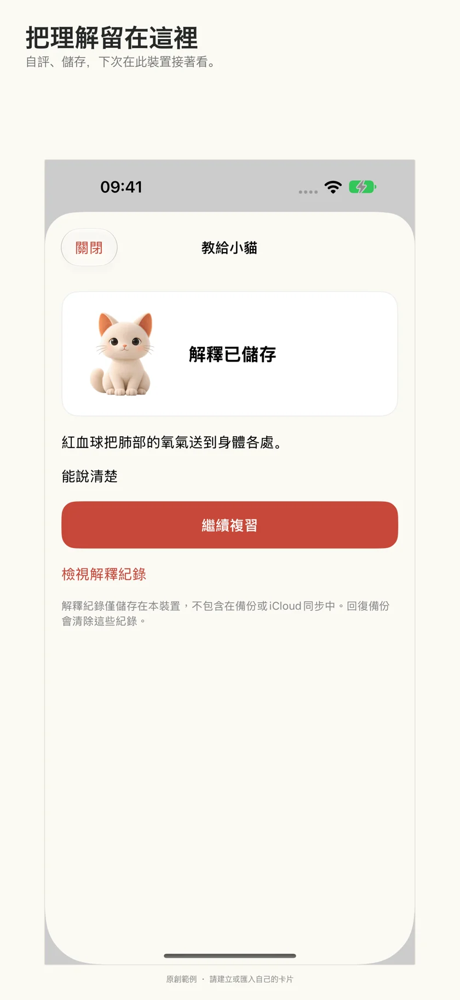
.apkg → Recolio
真實介面，看看哪種方式適合你。
04 / 換台裝置，接著學
開啟 iCloud 同步後，在登入相同 Apple 帳號的裝置間同步卡片與學習進度。同步預設關閉，需要 Recolio Pro、iCloud 權限與可用儲存空間。
閱讀手冊 →iCloud 同步 · Recolio Pro
加入文字、圖片與音訊；用 Cloze 挖空文字，或以圖片遮擋隱藏圖解的一部分。先預覽再學習，需要修改時才開啟編輯器。
間隔重複會依回答安排下次複習。Again 代表未能回想；Hard 代表成功但費力；Good 與 Easy 區分正常回想與輕鬆回想。
下一步，需要時有支援
真實 App 截圖，展示原創範例卡片；教材由你建立或匯入。
不能。請對照原卡答案，自行評估理解程度。貓咪回應代表紀錄儲存成功，並非正確性判斷。解釋不計入一般複習完成數。
請檢查麥克風、語音辨識權限，以及裝置是否支援所選語言的裝置端辨識。Recolio 不會改用雲端轉寫；你可以直接在解釋欄打字。
不會。草稿及完成的解釋僅儲存在本機，不參與 iCloud 同步或備份。刪除相關卡片會刪除其解釋；回復卡庫時會清除本機解釋紀錄，避免連結到錯誤卡片。重新匯入不會找回這些紀錄。刪除資料或重新安裝前，請另外保留重要文字。
點選 Today 或 Decks 的匯入按鈕，查看引導後從「檔案」選擇牌組，確認資訊再匯入。部分自訂範本或桌面外掛程式可能需要調整。
新匯入或大型牌組的裝置端辨識與索引需要時間。請試用清晰、較大的印刷文字，並檢查正反面。圖片搜尋查找辨識到的文字，並非辨識物體或尋找相似圖片。介面語言與卡片內容語言相互獨立。
同步預設關閉且需要 Pro。在各裝置設定中開啟，使用相同 Apple 帳號並授予 iCloud 權限，檢查空間與網路。首次同步完成後再大量修改。保護本機資料前，不要直接重新安裝。
使用購買時的 Apple 帳號，在 Recolio Pro 選擇回復購買項目。年度權益須有有效訂閱。在 Apple 設定→你的姓名→訂閱中管理或取消自動續訂。刪除 App 不會取消訂閱；帳務及退款由 Apple 處理。
自己的教材，自己的步調，無須註冊 Recolio 帳號。
取得 Recolio